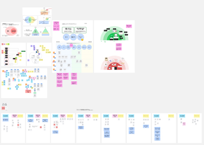
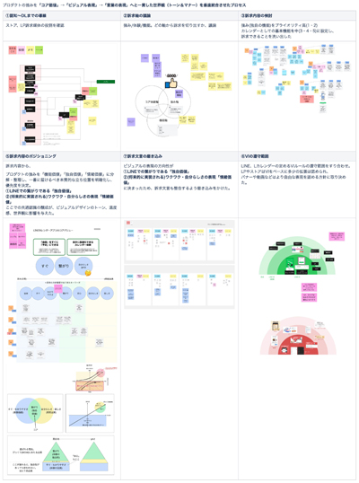
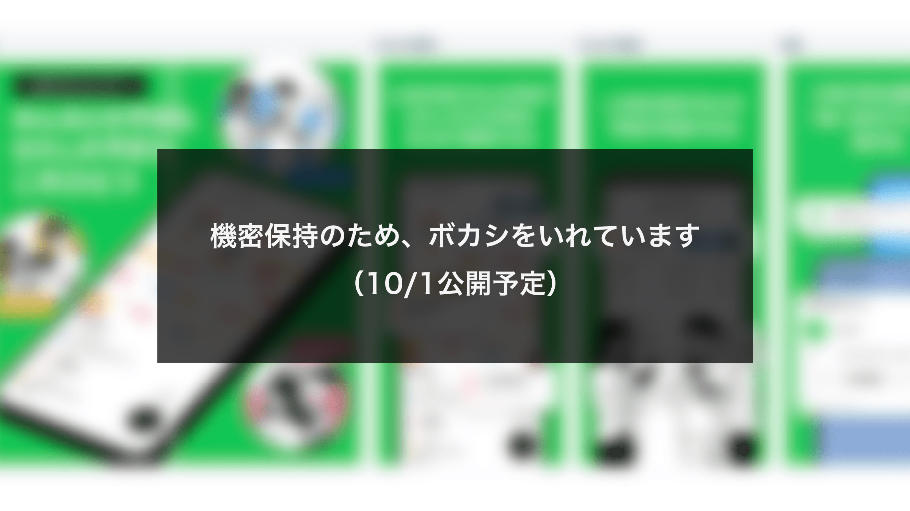
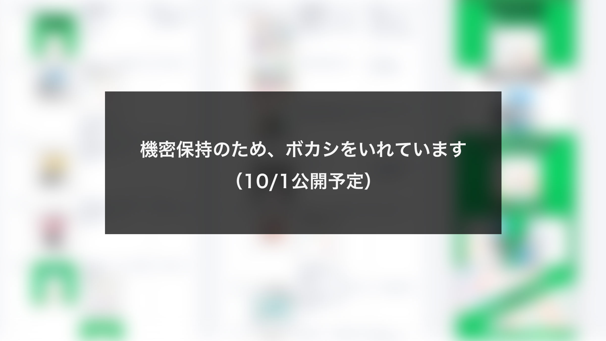
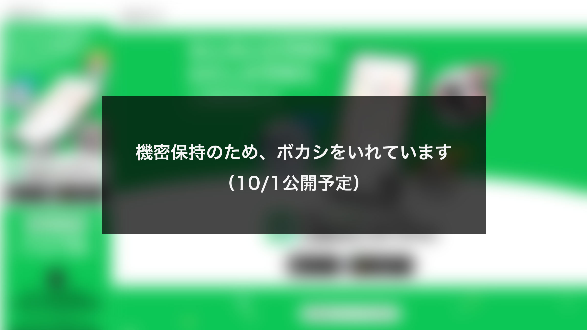
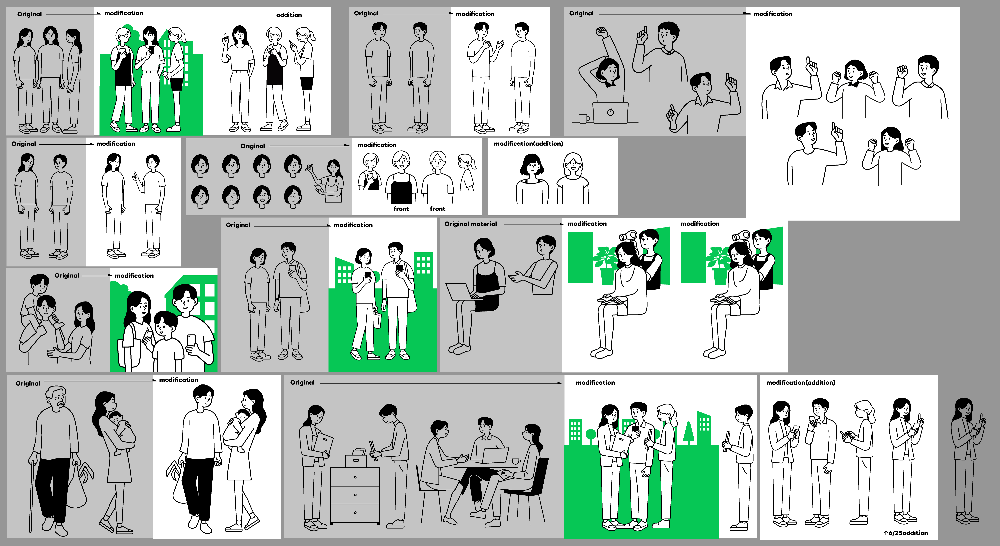
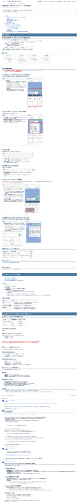

BXコンセプト設計
背景・課題
新規立ち上げにおいて、プロモーションやコミュニケーションデザインの軸となる定義がない状態だった。機能訴求の優先順位やデザインの方向性など、関係者間で認識を揃えて表現の基準を定義する必要があった。
取り組み
- 前提・ヒントの抽出: 初期コンセプトや事業資料を読み込み、ブランド体験の核となるキーワードや提供価値を抽出。あわせてLPや広告など各媒体の役割とユーザー導線を構造化した。
- 提供価値の軸足定義: 訴求内容から、プロダクトが届ける「独自価値・情緒価値・機能価値」のバランスを整理し、デザインが目指すべき方向性を言語化した。
- 合意形成: PO、リード、デザイナー等と連携し、キービジュアルやキャッチコピーの軸となる価値・機能を合意。クリエイティブ制作の基準（デザインアイデンティティの遵守範囲）を明確化した。
成果・学び
0-1プロダクトにおけるコミュニケーションデザインの「羅針盤」をゼロから構築。ブレない表現軸とライティング・ビジュアルの土台を定義したことで、その後のクリエイティブ制作における品質向上と意思決定の迅速化に貢献した。

'">
'">※機密保持の観点から、縮小を行っています。各ケースの詳細は、ご面談の際紹介します。
ストアクリエイティブ
背景・課題
立ち上げにあたり、コミュニケーションデザインが未定義の状態だった。ストア表現をはじめ、今後展開されるすべてのプロモーションの基準となるビジュアル基盤を確立する必要があった。
取り組み
- コア価値のビジュアル化: プロダクトの核である「LINEらしさ」「友だちと繋がる」といった独自の提供価値を解釈し、トーン＆マナーや表現方針を定義。
- 抽象価値・機能表現の具体化: 「予定の管理・共有」「プライバシー」などの抽象的なコンセプトを直感的なビジュアルに落とし込み、各種機能説明の標準デザインを構築。
- 関係者との合意形成: POやリード、デザイナーに連携し、ビジュアルルールや表現を明確化。
成果・学び
言語化された概念を具体的なクリエイティブへ昇華し、ビジュアルアイデンティティの基盤を確立。派生する各種コミュニケーションデザインの制作において、一貫した世界観の維持とスムーズな展開を可能にした。

'">動画ディレクション
背景・課題
新規リリースに伴い、記者発表会およびGoogle動画広告を通じてサービスのコア価値を瞬時に伝え、アプリストアやLPへの誘導を最大化する必要があった。また、初期プロモーションとして他のデザイン資産（LP・ストア等）とブレない一貫したブランド体験（BX）を提供するため、高精度な動画ディレクションが求められた。
取り組み
- ターゲット別の訴求設計: 「若年女性向け」「全年齢向け」など、ターゲット層に合わせて訴求軸を分けた2パターンの動画構成を企画。
- エンドツーエンドのディレクション: 構成案・絵コンテ作成、キャッチコピーライティング、UI素材パーツ制作、楽曲選定まで一貫して主導。
- 配信媒体への最適化: バンパー広告（6秒）や本編（36秒）など、媒体ごとの尺や視聴環境に合わせた情報設計を実施。
- 検証に基づくコピー作成: 提供価値との整合性を重視しつつ、広告効果を最大化するため社内アンケートを実施し、検証データを元に最終文言を採択。
成果・学び
「課題提起 → 解決策提示 → アプリダウンロード誘導」という定着率の高いストーリーラインを映像化。LPやストアクリエイティブと連動した一貫性のあるブランド体験（BX）を構築した。

'">LP
背景・課題
プレスリリースおよび記者発表に伴う初期トラフィック獲得において、アプリストアへの誘導と認知拡大を最大化するLPの構築が求められた。既存の「LINEミニアプリ版」との役割・併用メリットの明確化に加え、採用プラットフォーム（LandPress）の技術的制約をクリアしながらデザイン・実装を完遂する必要があった。
取り組み
- 本質的ニーズの捉え直しと軌道修正: 当初推進していた「ブランド統合LP」の方向性に対し、経営陣（執行役員）の真のニーズが「アプリファーストのLP」にあることを特定。訴求の軸足を再構成した。
- 粘り強い合意形成と構造再設計: 経営陣・PO・デザインリードそれぞれの意図を解きほぐし、全員が納得できる情報構造（ワイヤーフレーム）へと最設計。上位レイヤーとの認識ギャップを埋める推進を行った。
- コンバージョン視点の導線・情報設計: ストアへのコンバージョン（CVR）向上を最優先に配置。また「LINE内カレンダー」と「アプリ」の機能・提供価値の違いをユーザーが直感的に理解できる構成に。
- 制約下でのビジュアル制作と実装: PFの固有仕様や制限を紐解きながら、表現のベストを尽くし、デザイン実装を完遂。
成果・学び
認識齟齬による難航と、LandPressの未知の技術・表現制約という二重の難題に対し、自ら手探りで解を模索しながら軌道修正を完遂。
ステークホルダー間の泥臭い合意形成と技術的制約の克服を両立させ、LP施策を関係者全員が納得する形で無事着地へと導いた。

'">イラスト制作
背景・課題
LINEブランドのアイデンティティを厳格に維持しながら、カレンダーアプリのユーザー体験（UX）を豊かに表現する人物イラストアセットが求められていた。しかし、既存のアセットではカレンダー特有の利用シーンを表現できるパターンが乏しく、「家族・仕事仲間といったクラスタ」や「大学生・ワーママなどのターゲット属性」を捉えた表現の不足が課題となっていた。
取り組み
- ブランドガイドラインに準拠した描き起こし: LINEのVIルールを把握し、LP・動画・ストア・バナーなどマルチチャネル展開を想定した多様な人物・シチュエーションを制作。
- 監修対応によるクオリティと安全性の担保: イラスト原作者監修のもと、VIルールからブレない表現精度を追及し、各種施策で安全に運用できるイラストレーション品質を創出。
- アセット化によるチーム展開: 制作したイラスト群を共通アセット化し、他職能メンバーへ展開・共有。
成果・学び
厳格なVIルール下での実践を通じ、ブランドデザインへの解像度と表現力を獲得。多展開を見越したイラストアセット制作したことで、派生施策におけるデザイン制作の効率化とブランド品質の一貫性維持に貢献。

'">LINE公式アカウント（OA）の導入検討
背景・課題
新規プロダクトの集客（スタンプキャンペーン等）や既存ユーザーの再訪促進に向け、LINE公式アカウント（OA）の開設検討が持ち上がった。目的や投資対効果や実現可能性を見極めた上で最適な戦略方針を定める必要があった。
取り組み
- ターゲット定義とUX・機能フローの構造化: 新規・既存のユーザー層に応じた役割（入力体験の向上、リマインド通知、広告枠など）を定義。Messaging API連携を前提としたリッチメニューや自動応答によるアプリインストール誘導（サジェスト）など、具体的な利用シーン洗い出し。
- コスト構造および社内運用の試算: 2026年改定後の料金体系（通数課金モデル）と社内OA運用ルールを照らし合わせ、配信通数上限やメッセージコスト、想定CPI（獲得単価）などの収支シミュレーションを実施。費用対効果が最大化する運用規模を算出・検証した。
- 社内規約の精査: OA事務局とのコンサルテーションを通じ、自サービスOAから「LYPプレミアム」等へ直接誘導する際の第三者広告規約を確認した。
- 意思決定のサポート: PO・マーケティング等の関係者間で意見交換。外部広告出稿の成果予測、スタンプ付与条件の技術的制約、運用リソースを総合的に比較。
成果・学び
要件整理・規約調査・費用対効果シミュレーションを行い、根拠に基づいた意思決定（フェーズ1でのOA導入は見送り、外部出稿成果を注視）をサポート。不確実性の高い施策に対して安易に着手せず、無駄な開発・運用コストの発生を防ぎながら、将来的な拡張に向けた知見の土台を確立。

'">※機密保持の観点から、一部縮小を行っています。各ケースの詳細は、ご面談の際紹介します。